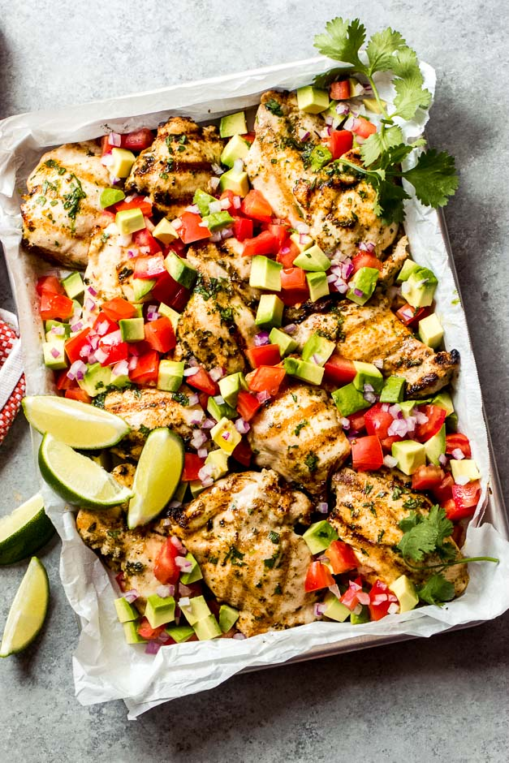
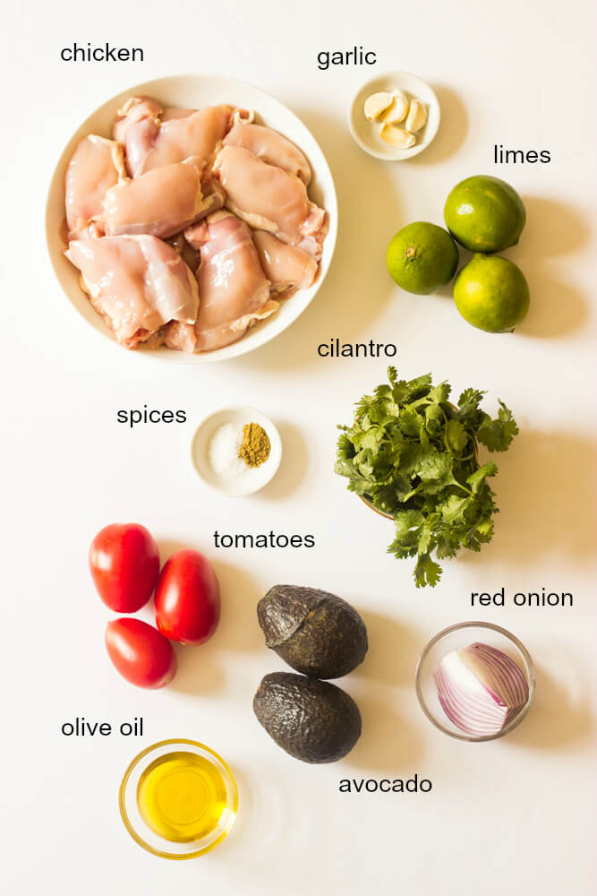
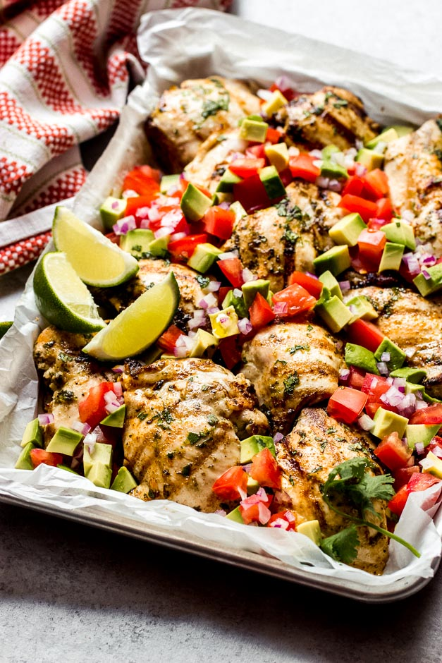

NIHAARIKA'S KITCHEN
30-MINUTE CILANTRO LIME CHICKEN WITH AVOCADO SALSA
September 4, 2019 By Nihaarika
Flavourful cilantro lime chicken with delicious avocado salsa will have you in and out
of the chicken in about 30 minutes! It is the perfect chicken recipe to throw on the grill

INGREDIENTS FOR CILANTRO CHICKEN
Not only does this lime chicken comes together in about 30 minutes but it is also
made with less than 10 ingredients.
- Chicken: I love using chicken thighs instead of breast as they are smaller,
juicier, and take less time to grill.
- Cilantro: fresh cilantro adds so much flavor.
- Limes: you will need fresh lime juice and zest.
- Garlic: garlic adds ton of flavor and pairs amazing with lime and cilantro.

HOW TO MAKE CILANTRO LIME CHICKEN RECIPE
What I love best about this cilantro chicken is that the ingredients are super basic
and you can easily double or even triple the recipe.
- Step 1: First prepare the marinade by combining cilantro, garlic, lime zest, lime
juice, salt, cumin, and olive oil. Add chicken to the marinade and let stand at
room temperature for 15-20 minutes. In the meantime, prepare the salsa.
- Step 2: In a bowl, combine the tomatoes, avocado, onions, lime juice, olive oil,
and cilantro. Season with salt and pepper, to taste. Gentry toss together and set aside.
- Step 3: Pre-heat gas grill on high heat. Clean and oil the grates. When hot,
add chicken thighs and cook for 10-12 minutes (about 4-5 minutes per each side) or
until cooked through. You will notice the thighs start to shrink and plump up
when they are done. Remove to a serving platter and serve alongside avocado salsa.
WHAT TO SERVE WITH CILANTRO LIME CHICKEN
No fuss, simple sides is the way to go when it comes to serving this cilantro
chicken. Here are some of our favorites.
- Cilantro Lime Coconut Rice: so good with this chicken!
- Watermelon Salad: you will be surprised how good this is.
- Mexican Rice: incredibly easy to make.
- 3-Minute Roasted Tomato Salsa: perfect to throw together with chips.

NEXT RECIEPE: SUN-DRIED TOMATO PASTA WITH SPINACH